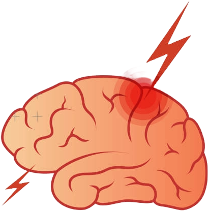
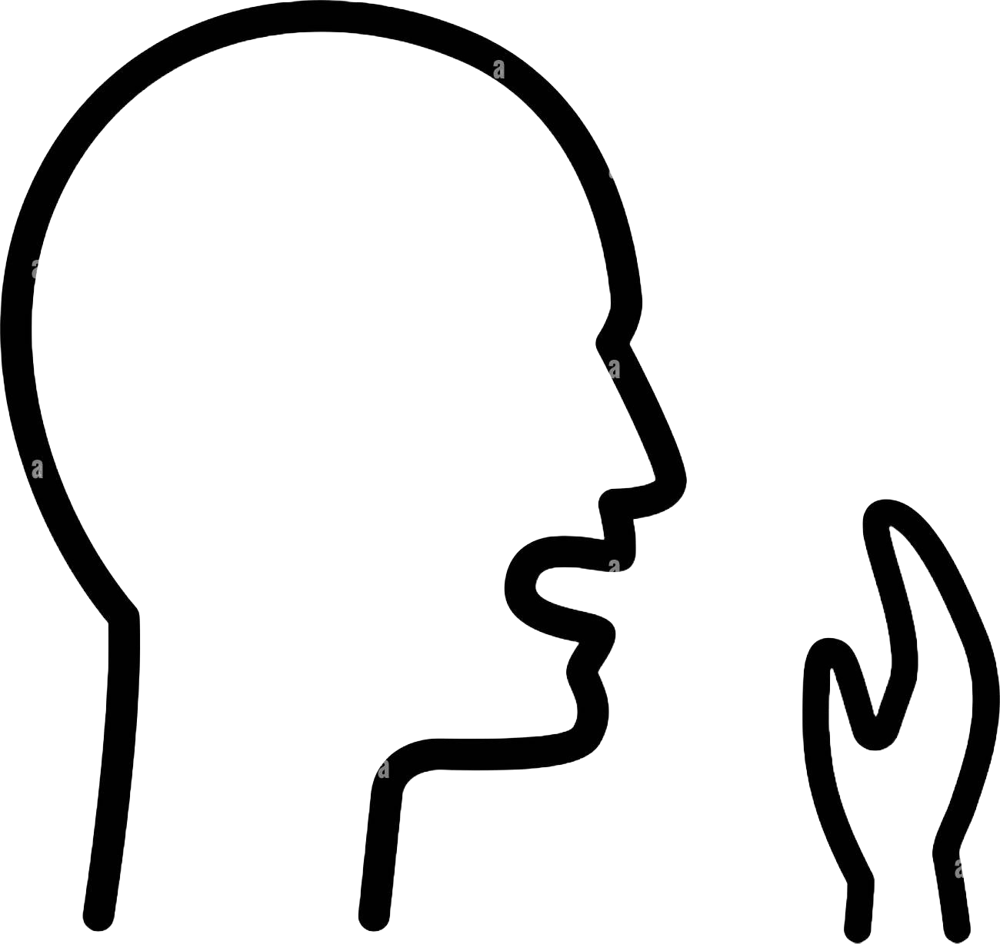
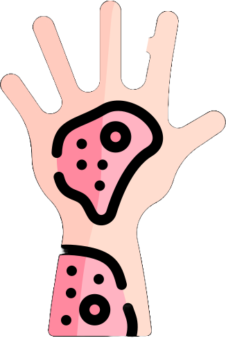

Research Engineer · Healthcare AI
I develop clinically aligned representation learning systems for biomedical AI. I move beyond black-box optimization by embedding physiological and structural priors into models to improve robustness under real-world distribution shift.
Research & Projects

Proposed Shotgun Retrieval via THC Tree with three complementary channels, achieving P@1 0.848 and MRR 0.872 on 200 expert neurosurgical queries — 3.3× above best visual baseline. Deployed at Harborview Medical Center integrating MedGemma + RAG for real-world neurosurgical workflow testing.

Achieved AUC 0.9519 and 92.7% sensitivity for acoustic TB detection, reducing diagnostic latency from weeks to real-time. Extracted 57 physiological biomarkers from 7,031 cough segments.
Discovered that frozen segmentation encoders harbor latent biomarker axes recoverable with zero trainable parameters. Achieved CVS AUC 0.803 and PRL AUC 0.716 with zero-shot generalization.
Built a grid-based stress transfer simulator with anisotropic Continuum Damage Mechanics, reproducing AO-type fracture evolution. Formulated segmentation robustness as a physics-constrained PPO min–max game.
Modeled tissue identity as a structural prior using 54,837 GTEx samples. Achieved R² = 0.857 on 257,955 drug–cell line pairs with 61.6% MSE reduction via cross-attention multimodal architecture.

Architected a three-agent clinical reasoning pipeline — Audio (HeAR), CXR (MedSigLIP), and CT agents with confidence-weighted late fusion, mirroring multi-specialist case conference model.
Academic Output
Career Path
Technical Expertise
Academic Background
Recognition
Let's Connect
I'm always interested in discussing collaborations in Healthcare AI, medical imaging research, or any exciting biomedical engineering challenges. Feel free to reach out!